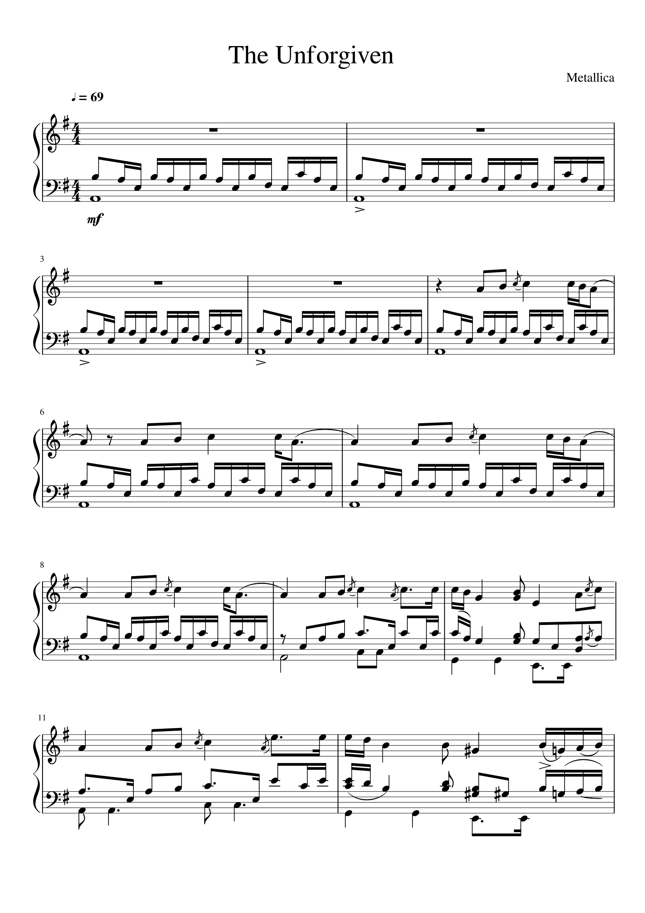
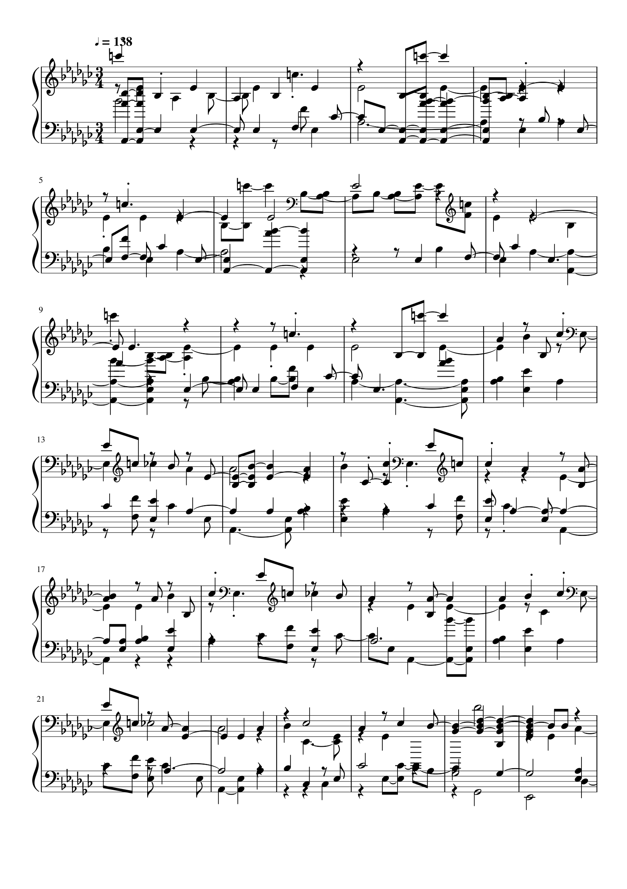

Home |
About |
Table of Contents |
This has been generated from the file I personally notated using MuseScore.
Download
the audio file, MIDI file, and MuseScore file (.wav, .mid, .mscz)This is the origional transcription of the song before being converted to MIDI.
The image below shows only the first page of the transcription, to view the full transcription please click on the image to open the full pdf in a new tab.
This is the computer generated transcription of the song derived from the MIDI file.
The image below shows only the first page of the transcription, to view the full transcription please click on the image to open the full pdf in a new tab.
